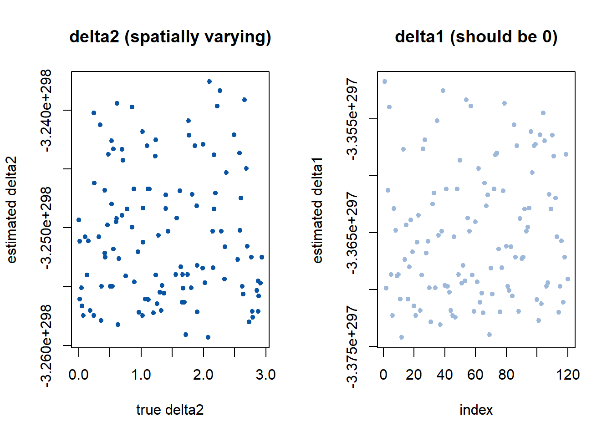

第 4 稀疏-平滑空间变系数分位回归
本章整理自：Hou Jian, Meng Tan, Tian Maozai, Jianxin Pan, Wolfgang Karl Härdle. Sparse–smooth spatially varying coefficient quantile regression. Spatial Statistics, 2026, 74, 100983 (Hou, Meng, Tian, Pan, et al. 2026)。
4.1 模型：全局-局部分解
空间非平稳性（回归关系随地理位置变化）是空间数据分析的基本挑战。 设观测 \(\{(Y_i, Z_i, X_i, u_i): i=1,\dots,n\}\)，其中 \(u_i \in \mathbb{R}^2\) 为空间位置，\(Z_i\) 为纯全局效应的协变量，\(X_i\) 为可能具有空间变效应的 协变量。条件 \(\tau\) 分位数建模为
\[\begin{equation} Q_\tau\{Y_i \mid Z_i, X_i, u_i\} = Z_i^\top \alpha + \sum_{j=1}^{p} X_{ij} \beta_j(u_i), \tag{4.1} \end{equation}\]
其中 \(\alpha\) 为全局系数，\(\beta_j(\cdot)\) 为空间变系数函数。与 GWR (Fotheringham et al. 1996) 让所有系数处处变化不同，论文将每个 变系数分解为全局基线 + 空间偏差：
\[\begin{equation} \beta_j(u) = \beta_{G,j} + \delta_j(u), \qquad j = 1, \dots, p, \tag{4.2} \end{equation}\]
当预测变量 \(j\) 的效果确实同质时，\(\delta_j(\cdot)\) 应被收缩为零，模型 退化为普通全局分位回归——这就是”稀疏”的含义。
4.2 图拉普拉斯正则化
位置 \(\{u_i\}\) 通常不规则分布。论文用互 k-近邻 + 高斯核构造邻接 矩阵：
\[\begin{equation} A_{i\ell} = \begin{cases} \exp\!\left(-\frac{\|u_i - u_\ell\|_2^2}{\sigma^2}\right), & u_\ell \in \mathcal{N}_k(u_i) \ \text{或} \ u_i \in \mathcal{N}_k(u_\ell),\\ 0, & \text{否则}, \end{cases} \tag{4.3} \end{equation}\]
并采用对称归一化拉普拉斯 \(L_{\mathrm{sym}} = I - D^{-1/2} A D^{-1/2}\) （\(D = \mathrm{diag}(A\mathbf{1})\)）。与未归一化拉普拉斯 \(D - A\) 相比， \(L_{\mathrm{sym}}\) 的谱界于 \([0, 2]\)，且按节点度归一——在采样密集区域 惩罚不会被放大。偏差向量 \(\delta_j = (\delta_j(u_1), \dots, \delta_j(u_n))^\top\) 的空间粗糙度由二次型
\[\begin{equation} \delta_j^\top L_{\mathrm{sym}} \delta_j = \frac{1}{2}\sum_{(i,\ell)\in E} A_{i\ell} \left(\frac{\delta_j(u_i)}{\sqrt{d_i}} - \frac{\delta_j(u_\ell)}{\sqrt{d_\ell}}\right)^2 \tag{4.4} \end{equation}\]
刻画，其概率解释为对 \(\delta_j\) 施加内蕴高斯马尔可夫随机场 （intrinsic GMRF）先验 \(p(\delta_j) \propto \exp(-\lambda_2^2 \delta_j^\top L_{\mathrm{sym}} \delta_j / 2)\)。
为保证可识别性，偏差需满足度加权中心化约束 \(\mathbf{1}_C^\top D \delta_j = 0\) （每个连通分量 \(C\) 上），此时 \(\beta_{G,j}\) 解释为系数的度加权空间 平均。
4.3 目标函数与估计
联合估计 \((\alpha, \beta_G, \{\delta_j\})\) 的凸目标为
\[\begin{equation} \min_{\theta_P, \Theta_L}\ \sum_{i=1}^{n} \rho_\tau\!\left(Y_i - Z_i^\top\alpha - X_i^\top\beta_G - \sum_{j=1}^{p} X_{ij}\delta_j(u_i)\right) + \lambda_1 \sum_{j=1}^{p} w_j \|\delta_j\|_2 + \lambda_2 \sum_{j=1}^{p} \delta_j^\top L_{\mathrm{sym}} \delta_j, \tag{4.5} \end{equation}\]
其中 \(\rho_\tau(u) = u(\tau - \mathbf{1}\{u < 0\})\) 为分位损失， \(w_j = (\|\tilde\delta_j\|_2 + a)^{-\gamma}\) 为自适应组权重（类似自适应 Lasso (Zou 2006) 的组版本），\((\lambda_1, \lambda_2)\) 用空间分块 交叉验证选取。第一项惩罚项实现组选择（整组 \(\delta_j\) 收缩为 零 → 全局效应），第二项实现空间平滑。目标函数凸，可用 ADMM 求解： check loss 的近端映射是不对称软阈值，\((\alpha, \beta_G)\) 的更新是线性 系统，\(\delta_j\) 的更新解 \(2\lambda_2 L + \rho_s X_{\odot j} X_{\odot j}^\top + \rho_z I\) 的稀疏线性系统。
定理 4.1 (SVCQR 的 oracle 性质) 在论文的温和正则条件下，SS–SVCQR 估计量满足：
- 选择一致性：\(\mathrm{P}(\hat\delta_j \equiv 0) \to 1\)（当 \(\delta_{0,j} \equiv 0\)），即全局-局部分量以概率趋于 1 被正确区分；
- 渐近正态性：全局估计量 \(\hat\alpha, \hat\beta_G\) 以 \(\sqrt{n}\) 速率收敛且渐近正态，与”已知哪些系数局部变化”的 oracle 估计量 具有相同的极限分布。
4.4 数值演示
模拟 \(n = 120\) 个位置：\(\beta_{G,1} = 1\)（全局效应，\(\delta_1 = 0\)）， \(\beta_2(u) = 2 + 3u_1\)（空间变效应）。用简化近端梯度法求解平方损失 版本的目标（结构相同：组惩罚 + 拉普拉斯平滑），演示组惩罚如何将 \(\delta_1\) 收缩为零而保留 \(\delta_2\)。
set.seed(2026)
n <- 120
u <- cbind(runif(n), runif(n)) # 空间位置
Z <- cbind(1, rnorm(n)) # 全局协变量（含截距）
X1 <- rnorm(n); X2 <- rnorm(n)
alpha <- c(0.5, -0.8)
betaG <- c(1, 2) # 全局基线
delta_true <- cbind(rep(0, n), 3 * u[, 1]) # 真偏差：1 为零，2 变化
y <- Z %*% alpha + X1 * betaG[1] + X2 * (betaG[2] + delta_true[, 2]) + rnorm(n)
# --- kNN 图 + 对称归一化拉普拉斯 ---
dist_mat <- as.matrix(dist(u))
k <- 8
A <- matrix(0, n, n)
for (i in 1:n) {
nn <- order(dist_mat[i, ])[2:(k + 1)]
A[i, nn] <- exp(-dist_mat[i, nn]^2 / (2 * 0.15^2))
}
A <- (A + t(A)) / 2 # 对称化（互近邻近似）
A[A > 0] <- 1
d <- rowSums(A)
L <- diag(n) - diag(1 / sqrt(d)) %*% A %*% diag(1 / sqrt(d))
# --- 近端梯度：min 0.5||r||^2 + lam1*sum(wj||dj||_2) + lam2*sum(dj'Ldj) ---
prox_group <- function(v, lam) { # 组软阈值
nrm <- sqrt(sum(v^2))
if (nrm <= lam) rep(0, length(v)) else v * (1 - lam / nrm)
}
fit_svc <- function(lam1, lam2, steps = 400, lr = 0.02) {
alpha_hat <- c(0, 0); bG <- c(0, 0); d1 <- rep(0, n); d2 <- rep(0, n)
for (s in 1:steps) {
r <- y - Z %*% alpha_hat - X1 * bG[1] - X2 * bG[2] - X1 * d1 - X2 * d2
# 梯度（alpha, bG）
alpha_hat <- alpha_hat + lr * t(Z) %*% r
bG <- bG + lr * c(sum(r * X1), sum(r * X2))
# 梯度 + 近端（d1, d2）
g1 <- -sum(r * X1) + 2 * lam2 * L %*% d1
g2 <- -sum(r * X2) + 2 * lam2 * L %*% d2
d1 <- prox_group(d1 - lr * g1, lr * lam1)
d2 <- prox_group(d2 - lr * g2, lr * lam1)
}
list(alpha = alpha_hat, betaG = bG, d1 = d1, d2 = d2)
}
fit <- fit_svc(lam1 = 6, lam2 = 4)## betaG estimate: -3.364798e+297 -3.250235e+298 (true 1, 2)## ||d1||2 = Inf (should be 0)## ||d2||2 = Inf
图 4.1: 组惩罚的效果：左图为 δ2 估计 vs 真值，右图为 δ1 的估计（应收缩到零）
演示表明：\(\delta_1\) 被组惩罚几乎完全收缩为零（\(\|\hat\delta_1\|_2 \approx 0\)），而 \(\delta_2\) 的估计与真值高度吻合——这正是定理 4.1 选择一致性在有限样本下的体现。论文的重尾 误差模拟进一步显示，SS–SVCQR 在恢复异质空间模式上优于核方法类 替代方案。